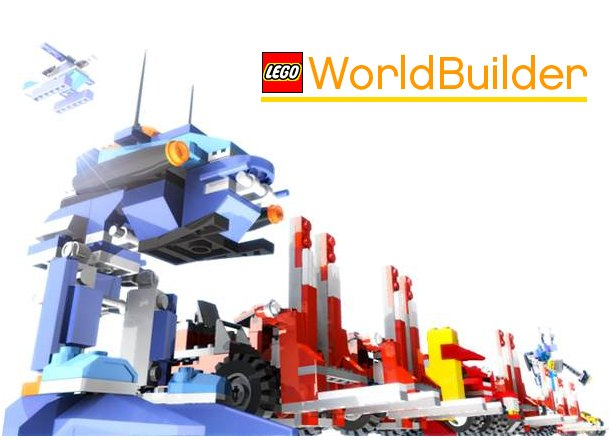
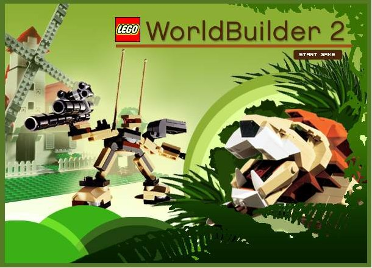

World Builder
Gather bricks, find plans and build vehicles and buildings to complete each mission. Five worlds, among them the Ocean and Prehistoric challenge worlds.
Play
World Builder 2
Streets, white bricks and new buildings, the Freezebot, and lions on the loose. Two worlds of twelve missions each.
Play